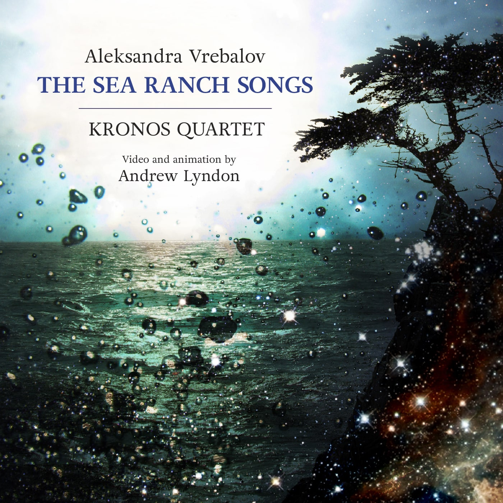

Back to discography

ALEKSANDRA VREBALOV | THE SEA RANCH SONGS
KRONOS QUARTET
Film by Andrew Lyndon
Cantaloupe Records, 2016
“Sea Ranch, a small community perched on Northern California’s oceanside cliffs, is one of a few places where the 1960s utopian dream of living in harmony with the land still survives… Vrebalov’s Sea Ranch landscape is rooted partially in atmospheric sonic vistas, and partially in the mellow, colorful California minimalism that some of the original Sea Ranchers may have had in their LP collections… it creates a sense of wonder and connection with the natural world: Sea Ranch’s mission and way of life, manifest musically.”
- Q2 Music (WQXR)